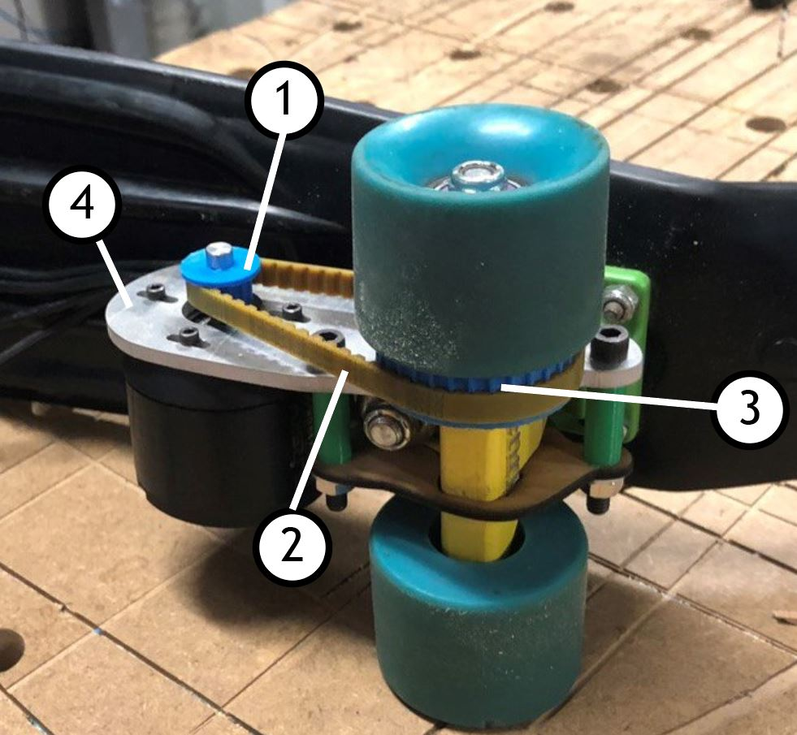
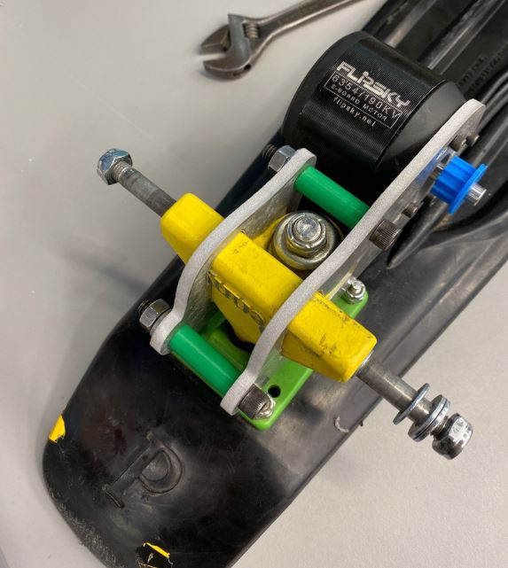
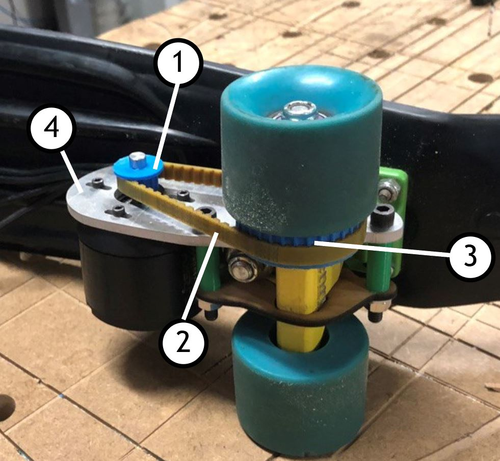
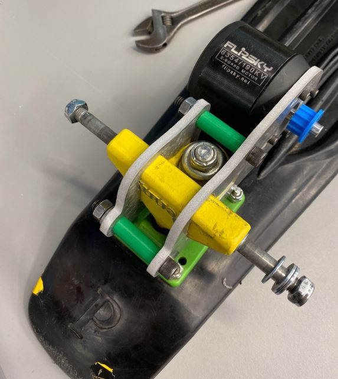
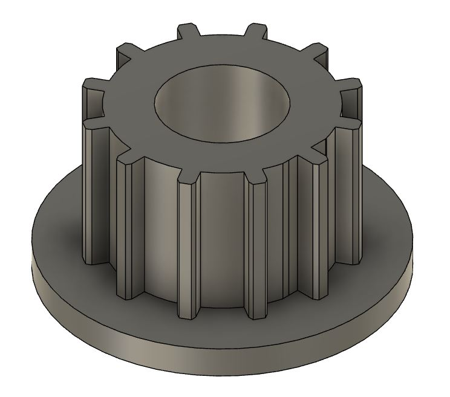
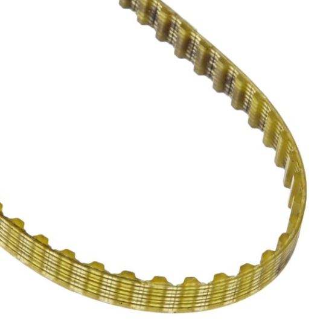
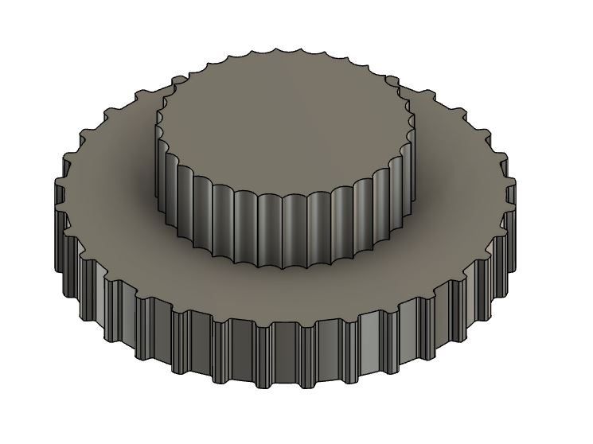
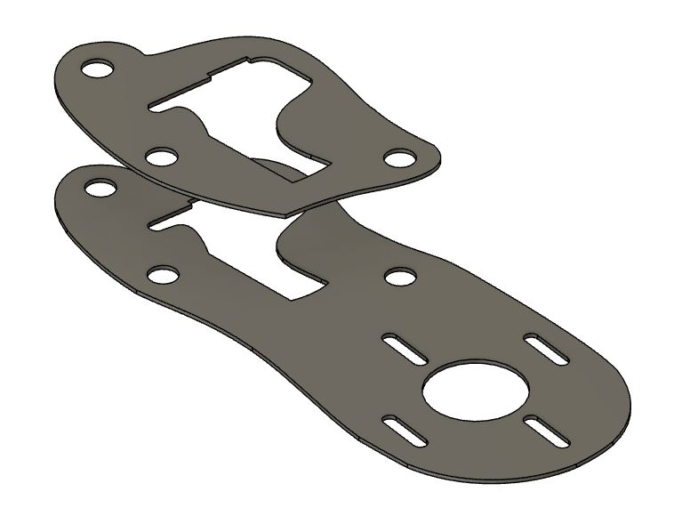

January 2022 - May 2022
We created a pair of custom retractable Heelys hidden inside the Nike Air Force 1. We call them the "Whoosh Force 1s".

Remember Heelys?
Heelys are roller shoes that have a wheel embedded in the heel, allowing users to glide on smooth surfaces.
They're a great, nostalgic project BUT they have some key issues:
- Safety - When you're not rolling, the wheel creates the feeling of a "slippery high heel"--both annoying and unsafe.
- Removal - Removing the wheel requires excessive force or the custom "Heely tool" to pry the wheel out.
- Storage - Once the wheel is removed, you have to carry around your wheel separately.
We set out to create a retractable roller shoe that adds convenience while maintaining the Heelys riding experience.
Brainstorming & Ideation
We entered a heavy design sprint where we ideated, sketched, and prototyped a multitude of concepts.
KEY DESIGN CRITERIA |
||
1. FEELHas to reproduce the fun experience of gliding around on the original Heelys. |
2. UXMust be convenient to switch between "gliding" mode and "walking" mode. |
3. STYLEShould look like a normal, fashionable shoe when in retracted "walking" mode. |
Key Design Criteria

How It Works
Mechanics
 
| Part | Function | Source/Material | |
| 1. Motor Key | Allows the turning of the motor to be transferred to the belt | 3D-printed PLA plastic |  |
| 2. Belt | Connects the motor to the wheel sprocket so that they turn together | Purchased |  |
| 3. Wheel Sprocket | Connects the motor to the wheel sprocket so that they turn together | 3D-printed PLA plastic |  |
| 4. Motor Mount | Secures the motor to the truck of the penny board | Waterjet-cut aluminum |  |
Electronics

| Component: | Smartphone | HM-10 Bluetooth Module | Arduino Nano | ESC | DC Brushless Motor |
| Role: | User uses volume buttons to input their desired speed | Recieves wireless serial data from phone and feeds it into the Arduino | Converts the serial data to microseconds, which the ESC can understand | Turns the microseconds into a throttle curve and activates the motor | Rotates its shaft, which rotates the wheel and moves the board |
Test Run
Our first complete test run was a run of the motor attachment on the skateboard using the battery as a power source and an Android phone as an input device. Because we lacked a housing for the electrical components of our device we strapped them to the top of the board.
Final Prototype
The prototype as a result of the project was a rideable electric pennyboard attachment. You can see me trying out the attachment below, controlling it with an iPhone.